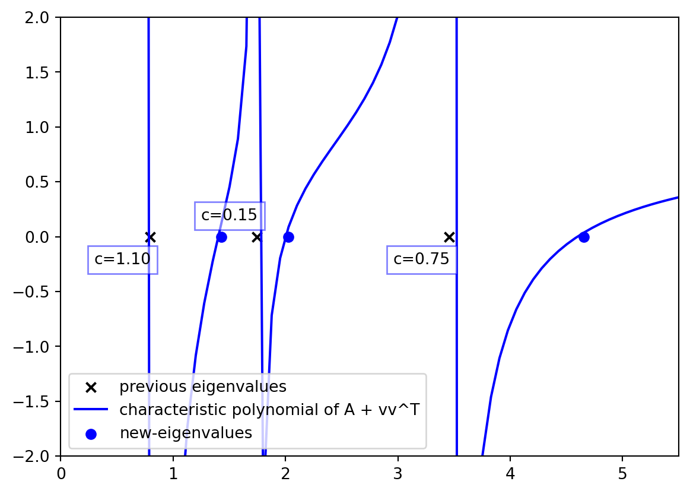
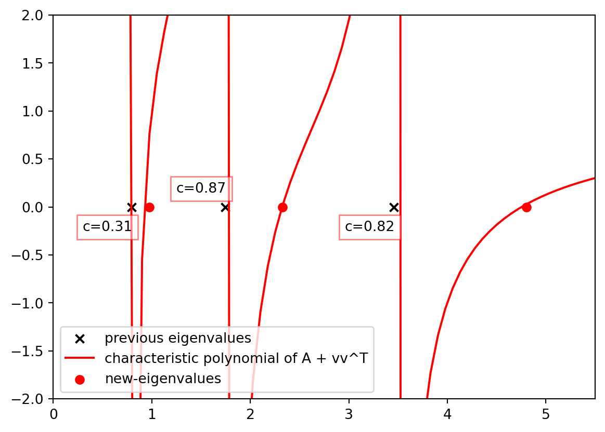

import numpy as np
import matplotlib.pyplot as plt
r = np.arange(0, 2, 0.01)
theta = 2 * np.pi * r
fig, ax = plt.subplots(
subplot_kw = {'projection': 'polar'}
)
ax.plot(theta, r)
ax.set_rticks([0.5, 1, 1.5, 2])
ax.grid(True)
plt.show()
We will now discuss the deterministic algorithm for approximating the matrix \(A\). The algorithm takes an iterative approach and follows \(k\) iterations. At each iteration, it will pick a vector \(v_i\) which corresponds to an edge and will add \(s_i v_i v_i^T\) to the current accumulated matrix. After \(k\) iterations it will give a good approximate for the matrix \(A\). But before we present the bulk of the algorithm, let’s start by laying some groundwork by presenting some useful intuitions.
Note that for any pair of matrices \(A\) and \(B\), having the same null-space we have that \(A \succeq B \Longleftrightarrow I \succeq A^{+/2} B A^{+/2}\). Hence, \[(1 - \epsilon) A \approx_\epsilon B \Longleftrightarrow \Pi \approx_\epsilon A^{+/2} B A^{+/2}\] where \(\Pi = A^{+/2} A A^{+/2}\) is the identity in the subspace orthogonal to the null space of \(A\) and is an idempotent matrix. In other words, \(\Pi^2 = \Pi\). Therefore, without loss of generality, we may assume that \(A\) in ?@def-matrix-approximation is an idempotent matrix \(\Pi\) via the transformation described where \(A\) is replaced by \(A^{+/2} A A^{+/2}\) and \(v_i = A^{+/2} v_i\) for all \(1 \le i \le m\).
With that in mind, thinking about idempotent matrices yields nice intuitions on how to think about the problem geometrically. Furthermore, for any positive semi-definite matrix \(M\) we can define an ellipsoid \(\{x | x^T M x = 1\}\) and for \(M = \Pi\) being an idempotent matrix the ellipsoid corresponds to the sphere in the linearly transformed subspace of \(\Pi\): \[x^T \Pi x = x^T \Pi \Pi x = ||\Pi x||_2^2 = 1.\]
Therefore, if we consider everything in the mapped subspace, i.e., replacing every vector \(x\) with \(\Pi x\) automatically, then we want to find a linear combination of their cross product such that the ellipsoid corresponding to that combination approximates a regular spherical shape. In other words, \[\begin{align*} &\hat{A} = \sum s_i v_i v_i^T \approx_\epsilon A \\ \Longleftrightarrow & ~ \hat{\Pi} = \sum s_i (A^{+/2}) v_i (A^{+/2} v_i)^T \approx_\epsilon A^{+/2} A A^{+/2} = \Pi\\ \Longleftrightarrow & ~ (1 - \epsilon) \Pi \preceq \hat{\Pi} \preceq (1 + \epsilon) \Pi \\ \Longleftrightarrow & ~ \forall x : (1 - \epsilon) ||\Pi x||_2^2 \le [\Pi x]^T \hat{\Pi} [\Pi x] \le (1 + \epsilon) ||\Pi x||_2^2 \\ \end{align*}\]
Therefore, the ellipsoid projected using \(\Pi\) is sandwiched between two spheres off by \(\epsilon\) in their radius. Therefore, the algorithm takes an iterative approach to solve this geometric problem. It first starts of with \(\hat{A}^{(0)} = \emptyset\) and then iteratively picks a vector \(v_i\) and assigns a weight \(s_i\) to it such that the ellipsoid \(\hat{A}^{(i)} = \hat{A}^{(i+1)} + s_i v_i v_i^T\) becomes iteratively more like a sphere. To formalize this, the algorithm always bounds the corresponding ellipsoid between two spheres of radius \(l^{(i)}\) and \(u^{(i)}\). At the beginning of each iteration, the lower bound \(l^{(i)}\) will be increased by some \(\delta_l\) and the lower bound \(u^{(i)}\) will be increased by some \(\delta_u\) and the algorithm will try to find a vector \(v_i\) and a weight \(s_i\) such that the new ellipsoid \(\hat{A}^{(i+1)}\). Moreover, the key idea here is to cleverly pick \(\delta_l\) and \(\delta_u\) values such that after \(k\) iterations the gap between the two spheres is off by \(\epsilon\). In other words, the following should hold: \[\frac{u^{(0)} + k \delta_u}{l^{(k)} + k \delta_l} = \frac{u^{(k)}}{l^{(k)}} \le \frac{1 + \epsilon}{1 - \epsilon}.\] This will ensure that the shape of the ellipsoid becomes more and more spherical as the algorithm progresses, and finally, a simple scaling will yield an approximate unit sphere which is what we want.
For illustration, the following shows the algorithm in action. The algorithm starts with an initial ellipsoid that is not spherical and then iteratively picks a vector \(v_i\) and a weight \(s_i\) such that it still remains sandwiched between two spheres of radius \(l^{(i)}\) and \(u^{(i)}\). Note that in this example \(\delta_l\) and \(\delta_u\) are equal, therefore, for a large enough \(k\) the ellipsoid will become spherical because although the radius is growing the gap remains the same, further limiting the range of the ellipsoid.

The fact that \(\hat{A}^{(i)}\) should be bounded between two spheres translates into all the eigenvalues of \(\hat{A}^{(i)}\) being bounded between the two radiuses. Therefore, an important observation is to monitor what happens to the eigenvalues of \(\hat{A}^{(i)}\) when \(vv^T\) is being added at each iteration. To do so, we consider the characteristic polynomial of \(A\) at each iteration written as \(p_A(\lambda) = \det(\lambda I - A)\). There are two important lemmas when analyzing \(A + vv^T\) matrices, one is the Sherman-Morrison lemma which states that:
Suppose \(A\) is an invertible square matrix and \(u, v\) are column vectors. Then \(A + uv^T\) is invertible iff \(1 + v^T A^{-1} u \neq 0\). In this case, \[(A + uv^T)^{-1} = A^{-1} - \frac{A^{-1}uv^TA^{-1}}{1 + v^TA^{-1}u}\]
The other is the matrix determinant lemma which states that:
Suppose \(A\) is an invertible square matrix and \(u, v\) are column vectors. Then \[\det(A + uv^T) = \det(A) (1 + v^T A^{-1} u)\]
Moreover, plugging these into the characteristic polynomial of \(A + vv^T\) yields the following:
\[ \begin{align*} p_{A + vv^T}(\lambda) &= \det(\lambda I - A - vv^T) \\ & = \det(\lambda I - A) (1 - v^T \left(\lambda I - A \right)^{-1}u) \\ & = \det (\lambda I - A) \left(1 - v^T \left[\sum_{i=1}^n \frac{1}{\lambda - \lambda_i} u_i u_i^T\right] v\right)\\ & = p_A(\lambda) \left(1 - \sum_{i=1}^n \frac{(v^Tu_i)^2}{\lambda - \lambda_i}\right)\\ \end{align*} \]
Therefore, we can assume particles being set on each of the \(\lambda_i\) values with the \(i\)th one on \(\lambda_i\) with charge \(v^Tu_i\). The new set of equilibrium points for this particle set will entail the new eigenvalues of \(A + vv^T\) which are the roots of \(p_{A + vv^T}(\lambda)\). Note that for \(u_i\) values such that \(v^Tu_i=0\) the charge is zero and therefore, the new eigenvalues will be the same as the old ones.
The following figure illustrates the matrix case \(A\) with three different vectors \(v_1\), \(v_2\) and \(v_3\). Each color corresponds to the characteristic polynomial for different \(v\) values where,
\[A = \lambda_1 u_1 u_1^T + \lambda_2 u_2 u_2^T + \lambda_3 u_3 u_3^T = \begin{bmatrix} 1.6 & -0.2 & -0.33\\ -0.2 & 3.4 & -0.33\\ -0.33 & -0.33 & 1 \end{bmatrix}\] \[\begin{bmatrix}\lambda_1 \\ \lambda_2 \\ \lambda_3\end{bmatrix} = \begin{bmatrix}0.79 \\ 1.75 \\ 3.46\end{bmatrix}, u_1 = \begin{bmatrix} -0.41\\ -0.15\\ -0.9 \end{bmatrix}, u_2 = \begin{bmatrix} -0.9 \\ -0.03 \\ 0.42 \end{bmatrix}, u_3 = \begin{bmatrix} 0.08\\ -0.99\\ 0.12\\ \end{bmatrix}\] We note that \(\langle v_i, u_j \rangle^2\) is the charge of particle \(j\) when adding \(v_i\) to \(A\) and we can summarize all the charged particles in the following matrix: \[v_1 = \begin{bmatrix} 0\\ 1\\ 1\\ \end{bmatrix}, v_2 = \begin{bmatrix} 1\\ 1\\ 0\\ \end{bmatrix}, C = \begin{bmatrix} 1.10 & 0.15 & 0.75\\ 0.31 & 0.87 & 0.82 \end{bmatrix}, C_{ij} = \langle v_i, u_j \rangle^2\]
import numpy as np
import matplotlib.pyplot as plt
def plot_characteristic_polynomial(A, v, color):
x = np.linspace(-25, 50, 1000)
w, u = np.linalg.eig(A)
# plot the determinant of xI - A
y = []
roots = []
prv = 0
for i in x:
val = 1 - np.sum(1/(i - w) * (v @ u)**2)
if prv < 0 and val > 0:
roots.append(i)
prv = val
y.append(val)
plt.plot(x, y, color = color, label='characteristic polynomial of A + vv^T')
plt.scatter(roots, np.zeros(len(roots)), color = color, marker = 'o', label='new-eigenvalues')
# create an orthonormal 3 by 3 matrix U
U = np.array([[1, 1, 1], [1, 1, -2], [1, -1, 0]])
U = U / np.linalg.norm(U, axis = 0)
A = U @ np.diag([1 , 2, 3]) @ U.T
vz = [[0, 1, 1], [1, 1, 0]]
colors = ['blue', 'red']
# plot the eigenvalues of A
w, u = np.linalg.eig(A)
# sort according to w and reorder u
w, u = zip(*sorted(zip(w, u.T)))
u = np.array(u).T
w = np.array(w)
for col, v in zip(colors, vz):
plt.scatter(w, np.zeros(w.shape), color = 'black', marker = 'x', label='previous eigenvalues')
# add text with textbox equal to np.sum(w) on top of each eigenvalue
for i, wi in enumerate(w):
t = plt.text(wi - 0.5, 0.1 * (4 * (i % 2) - 2.5), f"c={(v @ u[:,i])**2:.2f}", color = 'black')
t.set_bbox(dict(facecolor='white', alpha=0.5, edgecolor=col))
plot_characteristic_polynomial(A, v, col)
plt.xlim(0, 5.5)
plt.ylim(-2, 2)
plt.legend()
plt.show()

The goal is to pick a \(v\) such that all the eigenvalues are uniformly pushed forward so that they can stay between the new ranges \(l^{(i+1)}\) and \(u^{(i+1)}\). To get a sense, let’s pick one of the \(m\) vectors with uniform probability and add it to \(A\). In that case, the expected charges can be written as: \[E[\langle v, u_j \rangle^2] = \frac{1}{m} \sum_{i=1}^m \langle v_i, u_j \rangle^2 = \frac{1}{m} u_j^T \left( \sum_{i=1}^m v_i v_i^T \right)u_j = \frac{||\Pi u_j||_2^2}{m} = \frac{1}{m}\] Hence, on expectation all the particles have charge \(1/m\) and the expected deterministic polynomial is: \[ \begin{align*} E[p_{A + v}(\lambda)] &= p_A(\lambda) E\left[1 - \sum_{i=1}^m \frac{\langle u_i, v\rangle^2}{\lambda - \lambda_i}\right] = p_A(\lambda) \left(1 - \sum_{i=1}^m \frac{E\langle u_i, v\rangle^2}{\lambda - \lambda_i}\right)\\ & = p_A(\lambda) \left(1 - \sum_{i=1}^m \frac{1/m}{\lambda - \lambda_i}\right) = p_A(\lambda) - \frac{1}{m} \sum_{i=1}^m \frac{p_A(\lambda)}{\lambda - \lambda_i}\\ & = p_A(\lambda) - \frac{1}{m} \sum_{i=1}^m \prod_{1 = j\neq i}^m (\lambda - \lambda_j)\\ &= p_A(\lambda) - \frac{1}{m} p'_A(\lambda)\\ \end{align*} \] Therefore, if we start off with the matrix \(p_{A^{(0)}}(\lambda) = \lambda^n\), after \(nd\) iterations the expected polynomial is a set of associate Laguerre polynomials that are well studied [@dette1995some], and in particular, it has been proven that the ratio between the largest and smallest root for these polynomials is bounded by the value below:
\[\frac{d + 1 + 2\sqrt{d}}{d + 1 - 2\sqrt{d}} \xrightarrow{\epsilon = \frac{2\sqrt{d}}{d+1}} \frac{1 + \epsilon }{1 - \epsilon}\]
Although this is just speculation and no \(v_i\) values will necessarily exist with the expected behavior, we can still get an idea of the goal \(\epsilon\) and come up with the following proposition:
Proposition 1 For any matrix \(A = \sum_{i=1}^m v_i v_i^T\) we can choose a subset \(\mathcal{S}\) of \(v_i\) and a set of coefficients \(s_i\) with size \(nd\) such that: \[\hat{A} = \sum_{i \in \mathcal{S}} s_i \cdot v_i v_i^T,~~ (1 - \frac{2\sqrt{d}}{d+1}) A \preceq \hat{A} \preceq (1 + \frac{2\sqrt{d}}{d+1}) A\]
The graph formulation of Proposition 1 is as follows:
Corollary 1 For any graph \(G\) and any \(\epsilon\) we can choose a subset of \(\mathcal{O}(n/\epsilon^2)\) edges with arbitrary edge weights to obtain \(H\) such that \(H\) is an \(\epsilon\)-sparsifier of \(G\): \(L_G \approx_\epsilon L_H\).
This is set using \(\epsilon = \frac{2\sqrt{d}}{d + 1}\) where \(\frac{n}{\epsilon^2} = \mathcal{O}(nd)\). In the next section, we will see how we can choose \(v_i\) and \(s_i\) at each step such that after \(nd\) iterations this happens.
– TODO: Quantizing the boundedness
– TODO: plotting the potential function
For a demonstration of a line plot on a polar axis, see Figure 2.
import numpy as np
import matplotlib.pyplot as plt
r = np.arange(0, 2, 0.01)
theta = 2 * np.pi * r
fig, ax = plt.subplots(
subplot_kw = {'projection': 'polar'}
)
ax.plot(theta, r)
ax.set_rticks([0.5, 1, 1.5, 2])
ax.grid(True)
plt.show()
– TODO: show the results of using the deterministic algorithm vs the randomized algorithm